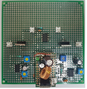
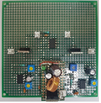

전자회로 실험
익스트림 오토매틱 핀볼
밝기 변화감지를 통해 공이 굴러왔음을 알고 자동으로 게임을 진행하는 핀볼이다.
구성
디지털 소자나 MCU 등을 일체 사용하지 않고 아날로그 소자만을 사용해 제작했다. 조도 센서를 사용 해 핀볼이 막대를 가리면 OP-AMP에 입력되는 전압이 전압분배 법칙에 의해 변화한다. 이를 통해 비교기에서 일정 센서값이 되면 가렸음을 인식하고, MOSFET에 신호를 준다. MOSFET은 솔레노이드에 입력되는 전압을 증폭 시키기 위해 사용된다.
하드웨어
왼쪽은 시뮬레이션 프로그램(orCAD)에 의해 분석된 회로도의 모습이고, 오른쪽은 구성한 실제 회로이다.
 

시연 영상
공이 부딪히며 내려와 막대에 닿으면 자동으로 솔레노이드가 동작 해 공을 다시 튕기는 것을 볼 수 있다.
디지털회로 실험
두더지 잡기
짝이 이뤄진 LED와 스위치를 통한 두더지 잡기 게임이다. LED가 켜지는 것이 두더지가 올라왔음을 의미하고, 스위치를 누르는 것을 두더지를 잡는것을 의미한다.
구성
디지털 논리 소자들을 조합해 MCU 없이 논리를 조합한다. 555타이머 3개를 사용 해 주파수가 다른 2개의 펄스를 발생시키고, 2개의 펄스의 비해 느린 주파수의 펄스 하나를 발생시킨다. 2개의 빠른 펄스는 각각 JK-FlipFlop에 입력되어 0부터 하나씩 증가해 3까지 4bit를 가산기 출력을 뽑아낸다. 0부터 3까지 서로 다른 속도로 증가하는 두 세트가 느린 펄스를 받는 D-FlipFlop의 입력으로 들어가 값이 capture 된 채 유지된다. 이 값이 2 to 4 Decoder로 입력되어 한 비트씩 할당받게 되고, 이는 각각 서로 다른 AND 소자의 입력으로 들어간다. 스위치가 눌리면 VCC, 눌리지 않는 동안은 GND가 연결되게 회로를 연결 해놓고, 이 입력을 AND 소자의 나머지 입력으로 넣는다. AND 소자의 출력을 모두 OR 소자로 묶어 하나의 비트로 나오게 한다. D-FlipFlop의 출력은 AND 소자의 입력으로 들어가기도 하지만, 할당된 LED에 연결되기도 해 두더지 역할을 한다. 즉, OR 소자의 출력은 두더지 역할을 하는 LED가 켜졌을 때 사용자가 그에 맞는 스위치를 누를 때 1인 것이다.
하드웨어
3T의 MDF 커팅을 위한 레이져 커터를 사용하기 위해 AutoCAD로 작업한 2D 도면과 완성하고 난 후 회로 모습이다.
시연 영상
LED가 켜진 곳의 버튼이 눌렸을 때만 정답 LED가 켜지고, 이외에는 반응하지 않는 모습이다. 사람의 기준에서 랜덤이라 할 수 있는 확률로 한번에 2쌍의 LED가 켜지는 것을 볼 수 있다.
주니어 창의 SW 경연대회

절대 혼자가 아니야, 도어락
블루투스 통신을 이용해 도어락을 제어한다. 침입자 발생 시, 경고알림과 함께 문을 봉쇄한다.
개요
혼자 사는 자취생들 같은 경우, 계약이 끝나갈 때 쯤에 집주인들이 집을 보여주기 위해 허락없이 문을 따고 들어오는 경우가 많다. 이는 불법침입에 해당하지만 학생의 입장으로서 따로 취할 수 있는 조취가 없다. 혼자 살지 않더라도, 가족 구성원 모두가 집을 비울 때 사생활 공간이나, 귀중품들이 담겨있는 곳은 언제나 불안할 수 있다. 혹은 아는 사람이 잠시 집에 왔을 때, 비밀번호는 알려주기 싫고 문은 열워줘야 하는 사람을 위해 개발된 도어락의 프로토 타입이다.
기능
어플과 블루투스 통신을 이용한다. 어플을 통해 Lock, Unlock, Close 제어를 할 수 있다. 도어락이 설치되는 곳마다 조도의 차이가 있으므로 처음 설치 시 센서 튜닝을 실시한다. 이 튜닝을 통해 문이 열렸을 때와 닫혔을 때의 값을 조정한다. 사용자가 문을 닫고 나간 후 Detect mode를 시작하면, 조도 변화를 감지해 문이 열렸음을 인식한다. 인식하면 사용자의 휴대폰으로 침입자가 발생했다는 알림이 가고, Lock 제어에 문을 닫아버리는 Close 제어와 Lock제어가 결합된 기능이 추가된다. 사용자가 어플에서 침입자가 아님을 알려주면, Close 제어가 초기화 되고 잠금이 풀려 침입자 발생 전 Detect mode로 돌아간다.
발표 자료
구동 영상
결과
디지털 신호처리
상보필터
LPF와 HPF를 조합한 상보필터를 설계한다.
개요
차후에 개발자로서 한번쯤 자율주행 세그웨이를 만들어 보고 싶다는 생각에 가속도, 자이로, 기울기 센서가 탑재된 시스템을 구성했다.
모터를 제어하는 과정은 포함되지 않았고, 센서를 통해 들어온 raw data에 필터를 거쳐 노이즈를 제거한다.
가속도 센서를 통해 입력된 가속도는 Low pass filter를 거치고, 자이로 센서를 통해 입력된 각가속도는 High pass filter를 거친다.
이 때, 서로 필터링 되는 주파수 경계를 잘 정해 Complementary filter가 되게 한다.
가속도와 각가속도를 통해 각도를 구하는 식을 이용해 출력은 각도로 나오게 된다.
이 각도가 차후에 제어과정의 입력이 된다.
발표 자료
아래 발표자료 영상에 직접 구성한 MATLAB Simulink 필터 시스템과 sin파로 발생시킨 input에 따른 ouput이 비교되어 있다. Analog filter가 아닌 digital filter를 사용하기 위해 sampling한 data 이므로 continuous한 input에 비해 discrete한 ouput이 나온것을 볼 수 있다.